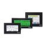

Building Automation
Industrial Automation
Power Automation & Safety


Bangladesh Distributor
Programmable Terminals
OMRON Programmable Terminals are easy-to-use HMIs that provide representational power, network compatibility, and powerful controller linking to support facility and machine production.
| Overview | Features |
|
|
Classifications |
| Engineering Data | Further Information |
Related Contents
- Programmable Terminals
NS Series Features
This section will describe the features of the NS Series functions.
Smart Active Parts (SAP Library)
SAP is a component that directly accesses the OMRON PLC and components.
Only selecting a required part from the library and putting it on the editing screen enables creating an application that can set up or monitor for the PLC, inverter, servo, communications unit, and temperature controller.
Screens can of course be created, and operation screen, supervision screen, and transmission ladder creation is not required.
Troubleshooting SAP Library
This is the Library - Glossary of Industrial Automation">SAP library that performs troubleshooting for each of the OMRON PLC units.
When an error occurs in each unit, the Trouble shooting Library - Glossary of Industrial Automation">SAP library inform the cause and countermeasures for the error in an easy-to-understand manner.
Displays a ladder program on the screen, making it possible to see the operating conditions.
The ladder monitor can be used as a PLC electrical monitor, and perform ladder monitering for address/search commands and multi-point I/O etc.
●Jump from Alarm to Circuit
Automatically search the alarm bit at the flip of a switch or so easily from the alarm screen.
●Reading I/O Comments Directly from PLC, very easily
Read I/O Comments from the PLC with one touch.
No operations are necessary to display I/O Comments.
Integrated Simulation
You can simulate ladder and screen data at the same time on a personal computer without a real PLC nor NS.
Just by clicking one icon, the ladder program and screen can be checked at the same time.
Multi-language Support
42 languages are supported, including a convenient function to change the nameplate.
42 Asian and European languages can be displayed on the screen using Unicode. Also use the nameplate switching function to change nameplates in max. 16 and indicate the language to be displayed on the plate to change one screen in max. 16 languages.
The nameplate encoding can also be set when importing.
When importing screen data, specific encoding can be applied to a nameplate, and the same font and font color can be applied to other name plates automatically.
Multi-language support has become even easier.
You can request translations to a translating companies by simply exporting Japanese screen data to a CSV file and emailing it to the company.
Then, by simply importing the translated CSV file, the multi-language screens can be easily completed.
Note:For multi-language compatability, Windows2000 or XP is required.
FTP (File Transfer Protocol)
This is the standard file transfer protocol (procedure) used on the internet.
Since FTP is an (open) protocol, there is a great deal of transmission software (FTP clients) available, and there is also a substantial library available for use with the software.
With the NS, it is possible to transmit screen data to a Windows FTP client, and to create applications that change screen data files with software included in the FTP library.
You can edit text or lists (by Put, Get Commands) from the host computer as well as make changes to recipes so easily!
And you can replace BMP files only such as images and photographs.
Screen changes are also really easy!
Recommended Products
 NS Series
NS Series
Even Simpler Equipment Operation with Outstanding Synergy.
NT11 / NT21
Compact Size, High Performance
NV Series
Compact and Simple, Extremely High Cost Performance. The Best PT for Package PLCs